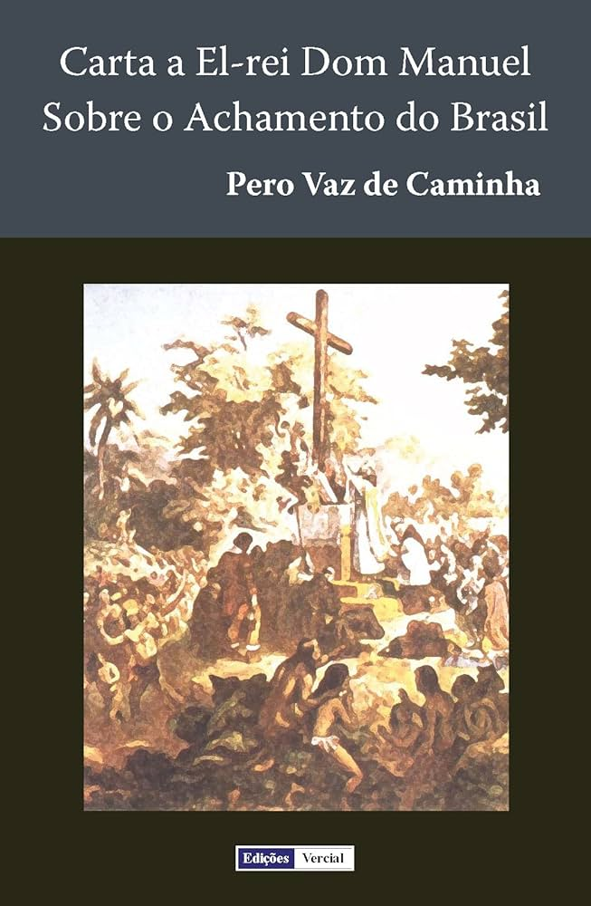

Quinhentismo
O Quinhentismo é o período literário que marca o início da literatura no Brasil, coincidindo com o século XVI (anos 1500).
Esse período corresponde ao início da colonização portuguesa e à produção literária da época, tanto em Portugal quanto no Brasil.
A literatura do Quinhentismo, especialmente no Brasil, tem duas vertentes principais: a literatura de informação e a literatura religiosa.
.
Principais características do Quinhentismo
1. Literatura de Informação:
Composta por relatos de viajantes, exploradores e cronistas que descreviam as novas terras descobertas, especialmente o Brasil.
O foco era informar a coroa portuguesa e o público europeu sobre as características geográficas, fauna, flora e povos indígenas.
A obra mais famosa dessa fase é a Carta de Pero Vaz de Caminha, escrita em 1500 e enviada ao rei de Portugal, D. Manuel I.
.
2. Literatura Jesuítica (Religiosa):Com o objetivo de catequizar os indígenas e promover a fé católica, os jesuítas, como José de Anchieta, produziram textos religiosos.
Muitos escritos eram feitos em português e na língua tupi para converter os nativos ao cristianismo.
Contexto histórico
O Quinhentismo no Brasil começou com a chegada dos portugueses em 1500. A literatura desse período reflete a visão dos colonizadores,
exalta as riquezas naturais do território e apresenta uma perspectiva eurocêntrica sobre os povos indígenas.
A literatura jesuítica desempenhou um papel fundamental na evangelização dos nativos e na estruturação social da colônia.
.
AUTORES E OBRAS
Pero Vaz de Caminha: "Carta a El-Rei Dom Manuel"
Padre José de Anchieta:"Vida do Padre"
Conclusão
O Quinhentismo é marcado pelo caráter informativo e religioso, influenciado pelas expedições colonizadoras e pela Igreja Católica.
Apesar de não ser uma produção artística elaborada como os períodos posteriores, foi o ponto de partida da história literária brasileira.
Esse período inclui obras como as crônicas de Vasco Fernandes Coutinho e os escritos de Pero Vaz de Caminha, que oferecem uma visão dos primeiros
contatos entre europeus e povos indígenas brasileiros.